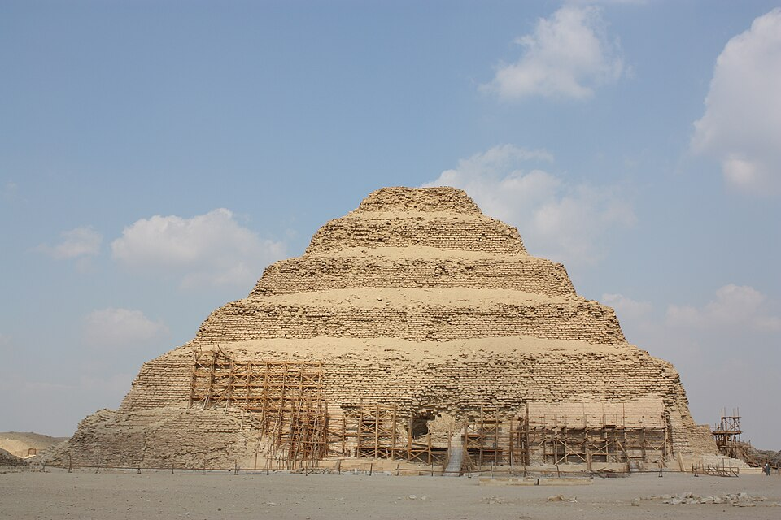

Первое гигантское каменное здание
Ступенчатая пирамида в Саккаре — древнейшее из сохранившихся крупных каменных зданий мира. Возведена в III династии, около 2670 года до н. э., для фараона Джосера (Нечерихета) его высшим сановником Имхотеп. Согласно позднеегипетской традиции, Имхотеп — канцлер, врач и жрец; позже его обожествили как бога исцеления, и греки слили его образ с Асклепием — редчайший случай, когда реальный человек стал богом.
Сначала Имхотеп замышлял обычную каменную мастабу, но в ходе строительства она росла шесть этапов подряд — и стала ступенчатой пирамидой. У ступеней был символический смысл: лестница, по которой покойный фараон поднимается на небо. Это первое здание, построенное из тёсаного камня вместо сырца, — отсюда началась «каменная эпоха» Египта.
Шесть ступеней
Шестиступенчатая пирамида: основание 125 на 115 м, высота около 60 м. В ядре — огромная вертикальная шахта: в её глубине покоился составной саркофаг из гранитных «шпал», перекрытый куполом, с круглым отверстием и пробкой наверху. Пирамида предназначалась всей царской семье — в тоннелях устроили 11 погребальных камер, где похоронены жёны и дети Джосера; тело самого фараона не найдено, а пирамида была ограблена ещё в древности.
Комплекс: «машина воскресения»
Комплекс при пирамиде — крупнейший среди всех: он продлевал жизнь ка фараона после смерти. Всё обнесено каменной оградой периметром около 1,6 км и высотой до 10 м. В сердце — заупокойный храм с гипостильным залом: впервые в истории вырезаны каменные колонны в виде связок тростника. Здесь же площадь хеб-сед — праздничного «седа» фараона, храм «T», южный двор, сердаб с царской статуей и загадочная «Южная гробница» — небольшое замурованное строение, назначение которого не установлено. Отсюда и современная метафора: комплекс — «машина воскресения», каждый элемент которой держал царя живым в вечности.
Землетрясение и долгая реставрация
После землетрясения 1992 года комплекс реставрировали 14 лет и открыли для посетителей в 2020-м. Археологи продолжают находки: в 2018-м в самой пирамиде нашли бронзовую статую Осириса высотой 63 см в короне-атефе, а в 2022-м неподалёку — пять богато украшенных гробниц Первого переходного периода.